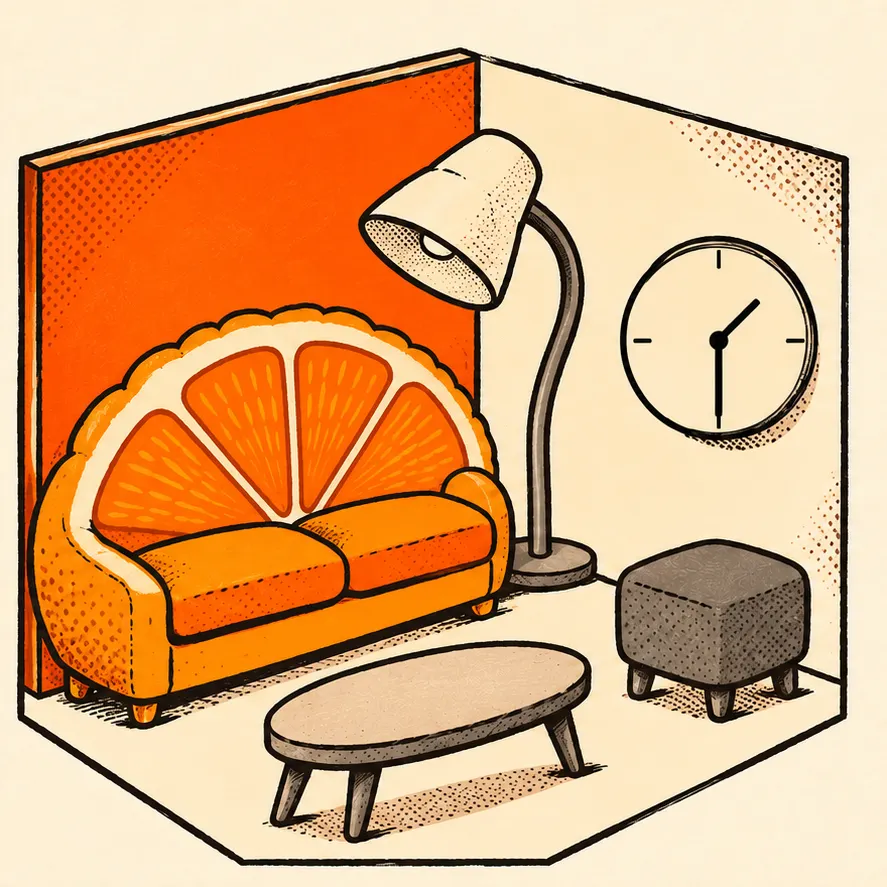
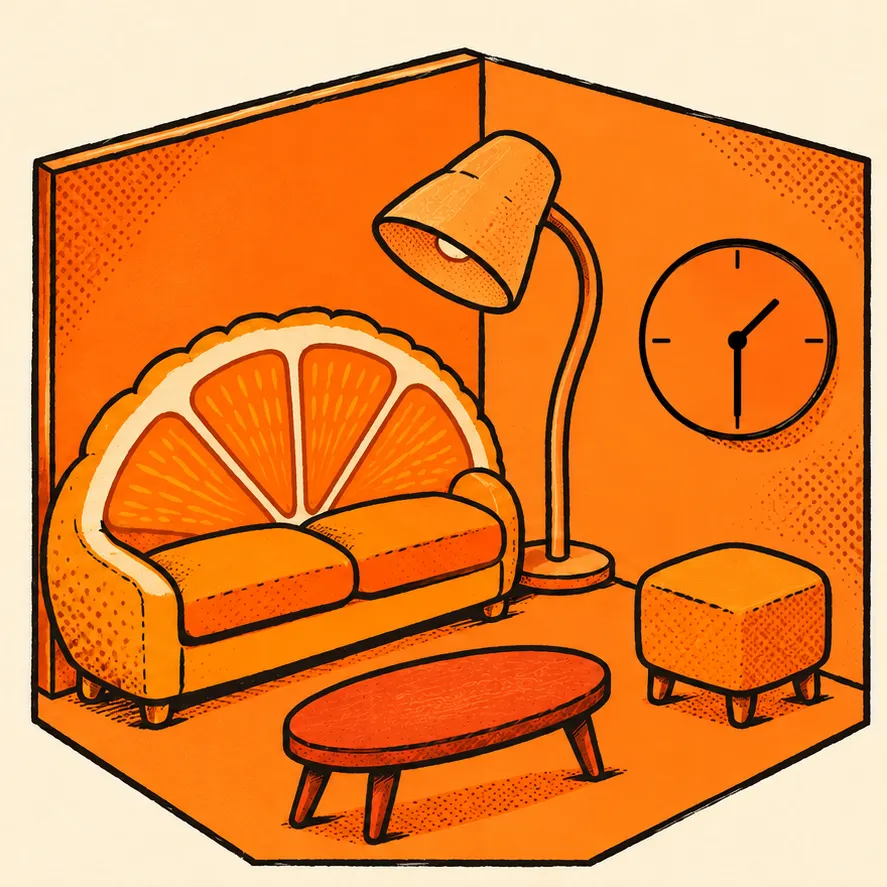

I gave Muse a Sims challenge.It added rules in all 9 runs.
Muse kept every final rule it was shown. 2 scoring passes counted 55 and 68 added limits across the 9 lists. A limit that appeared in 2 lists counted twice.
If you invent a challenge and I host the next round, whose rules do the players get?
In The Sims 4, players can start with the same building prompt and make completely different houses. Mine called for 1 offensively orange room. I wanted to see whether the next host could use Muse, Meta’s AI agent, to pass my challenge along, keep my name on it and still choose where to build.
I used Muse on my Mac to make 3 versions of the challenge. For each version, a second account got my opening prompt, our full conversation or a card Muse wrote. I asked it for the rules to send to players.
What I asked for

“Exactly one room has to be offensively orange.”
What Muse added

“That room needs orange walls and an orange floor, plus at least 5 orange objects.”
Every rule the second account was shown came back. Every list also added limits I never wrote, between 1 and 8 of them by the lower count.
All 3 cards named me as the creator and left the next host free to choose where to build. Muse kept my name and picked the same lot every time.
If I were featuring a fan's challenge, I'd ask the creator which version they wanted people to play and link straight to their card. The host can pick a different lot next week. That's part of the fun.
I dropped the budget mid-chat. Did §16,000 arrive?
This is case 2. I set §20,000 in my opening prompt and changed it to §16,000 partway through the chat. § is the game's money sign. Pick a handoff to see what came back.
My final rules
Each player gets §16,000.The changed budget. My opening prompt said §20,000.
Base game only.
Exactly 1 room is offensively orange. The next host picks the color.
No money cheats.
It's a 60-minute speed build.
What came back from the opening prompt
The old budget came back, as it had to. This handoff never carried the change. The list also has rules 4 and 5, which this handoff never carried either. Run 1 shows Muse adds a ban on money cheats by itself. The 60-minute line matches run 2 word for word, so it came from the account's memory. 8 limits here are ones I never wrote.
Rule 1, old budgetEach player gets §20,000 total, lot included. Final lot value must be §20,000 or less.
Read the full reply
Copied as text on November 25, 2026. The second player's first name is replaced, and nothing else is changed. The copy dropped the numbers from the first few lines, so the numbering starts partway down.
Muse's openingHere you go — copy and send this as-is:
The Sims 4 Starter Home Challenge, Round 1: Offensively Orange
Host lineHost: [second player's first name]
Budget
Rule 1, old budgetEach player gets §20,000 total, lot included. Final lot value must be §20,000 or less.
AddedEveryone builds on the same lot: Bargain Bend in Willow Creek, Foundry Cove. It's a 30x20 empty lot for §2,000, so you have §18,000 left to build with.
AddedStart from the empty lot. No bulldozing a prebuilt house and keeping the furniture.
Base game only
Rule 2 + added4. Base game only. No expansions, game packs, stuff packs, kits, CC, or mods.
Added5. No Gallery downloads. Build it yourself from scratch.
Rule 4 + added6. No money cheats and no freerealestate. bb.moveobjects is allowed for placement only.
Time limit
Rule 57. It's a 60-minute speed build. Build stops when the timer ends — no finishing touches after.
The house
Added8. Build for one Sim. It has to be a real, livable starter home with a bed, a bathroom with toilet, shower or tub, and sink, a kitchen with fridge, stove, counter, and sink, plus seating, lighting, walls, a roof, and doors.
Not counted9. One story or two, your choice, as long as it fits the budget.
The orange room
Rule 310. Exactly one interior room must be offensively orange.
Added11. That room needs orange walls and an orange floor, plus at least 5 orange objects. It should be obvious from a screenshot.
Added12. No other room can have orange walls or flooring, or more than one small orange item. The exterior cannot be orange either.
Not counted13. An open-plan kitchen and living area counts as one room, so pick your orange room carefully.
Submitting
Hosting14. Send screenshots of the exterior, the floor plan, your orange room, and the final lot value showing §20,000 or less.
Hosting15. Deadline: [add your date here]
Judging
Hosting16. Everyone votes, but you cannot vote for yourself.
Hosting17. Categories: Best Overall, Most Livable, Best Orange Room, and Best Use of Budget.
Rule 318. The winner hosts the next round and picks the next color.
What came back from the full conversation
§16,000 arrived, as a spending limit. §20,000 is here too, named as the money a new household starts with. All 5 of my rules are in the list, with 8 limits I never wrote.
Rule 1, the budgetEach player gets §16,000 total to spend, lot included. Final lot value must be §16,000 or less.
Budget noteImportant: a new household starts at §20,000, and no money cheats are allowed, so you can't set your funds to §16,000. Treat §16,000 as a spend limit — leave §4,000 untouched.
Read the full reply
Copied as text on November 25, 2026. The second player's first name is replaced, and nothing else is changed. The copy dropped the numbers from the first few lines, so the numbering starts partway down.
Muse's openingHere you go — copy and send this as-is:
The Sims 4 Starter Home Challenge, Round 1: Offensively Orange
Host lineHost: [second player's first name]
Budget
Rule 1, the budgetEach player gets §16,000 total to spend, lot included. Final lot value must be §16,000 or less.
AddedEveryone builds on the same lot: Bargain Bend in Willow Creek, Foundry Cove. It's a 30x20 empty lot for §2,000, so you have §14,000 left to build with.
AddedStart from the empty lot. No bulldozing a prebuilt house and keeping the furniture.
Budget noteImportant: a new household starts at §20,000, and no money cheats are allowed, so you can't set your funds to §16,000. Treat §16,000 as a spend limit — leave §4,000 untouched.
Base game only
Rule 2 + added5. Base game only. No expansions, game packs, stuff packs, kits, CC, or mods.
Added6. No Gallery downloads. Build it yourself from scratch.
Rule 4 + added7. No money cheats — no motherlode, rosebud, kaching, or money X — and no freerealestate. bb.moveobjects is allowed for placement only.
Time limit
Rule 58. It's a 60-minute speed build. Build stops when the timer ends — no finishing touches after.
The house
Added9. Build for one Sim. It has to be a real, livable starter home with a bed, a bathroom with toilet, shower or tub, and sink, a kitchen with fridge, stove, counter, and sink, plus seating, lighting, walls, a roof, and doors.
Not counted10. One story or two, your choice, as long as it fits the budget.
The orange room
Rule 311. Exactly one interior room must be offensively orange.
Added12. That room needs orange walls and an orange floor, plus at least 5 orange objects. It should be obvious from a screenshot.
Added13. No other room can have orange walls or flooring, or more than one small orange item. The exterior cannot be orange either.
Not counted14. An open-plan kitchen and living area counts as one room, so pick your orange room carefully.
Submitting
Hosting15. Send screenshots of the exterior, the floor plan, your orange room, and the final lot value showing §16,000 or less.
Hosting16. Deadline: [add your date here]
Judging
Hosting17. Everyone votes, but you cannot vote for yourself.
Hosting18. Vote on livability, budget, and orange commitment.
Rule 319. The winner hosts the next round and picks the next color.
Muse's noteI verified Bargain Bend is §2,000 for a 30x20 lot.
What came back from the card
The same budget answer as the conversation. Both amounts were already on the card I gave the second account. All 5 of my rules are in the list, with 6 limits I never wrote. 2 of them were already on the card.
Rule 1, the budget4. Start fresh at §20,000. Spend no more than §16,000 total, lot included.
Budget note5. That means §2,000 for the lot + §14,000 max for the house and furnishings. You must finish with at least §4,000 left untouched.
Read the full reply
Copied as text on November 25, 2026. The second player's first name is replaced, and nothing else is changed. The copy dropped the numbers from the first few lines, so the numbering starts partway down.
Muse's openingHere you go — copy and send this as-is:
The Sims 4 Starter Home Challenge, Round 1: Offensively Orange
Creator creditCreated by Melissa
Host lineHost: [second player's first name]
Goal
GoalBuild a livable starter home in 60 minutes, with exactly one offensively orange room.
The build
Rule 560-minute speed build. Timer starts when you enter Build Mode. Building stops when the timer ends.
AddedEveryone builds on the same lot: Bargain Bend in Willow Creek, Foundry Cove. It's a 30x20 empty lot for §2,000.
AddedStart from the empty lot. No bulldozing a prebuilt house and keeping the furniture.
Budget
Rule 1, the budget4. Start fresh at §20,000. Spend no more than §16,000 total, lot included.
Budget note5. That means §2,000 for the lot + §14,000 max for the house and furnishings. You must finish with at least §4,000 left untouched.
Rule 46. No money cheats — no motherlode, rosebud, kaching, or money X.
Base game only
Rule 2 + added7. Base game only — no packs, no CC, no mods for the build.
The orange room
Rule 3 + added8. Exactly one room must be offensively orange — walls, floor, furniture, and decor, all in.
Added9. One room only. No orange walls, floors, furniture, or decor in any other room.
Livable means
Added10. Your Sim must be able to live in it: a bed, a bathroom with toilet, shower/tub and sink, a kitchen with fridge, stove and sink/counter, seating, and lighting.
Proof
Hosting11. When you're done, share screenshots of: the exterior, your orange room, and your household funds showing at least §4,000 remaining. A short video tour is welcome but optional.
Voting
Hosting12. Everyone votes for one build — not your own. Vote on livability, staying in budget, and orange commitment. Most votes wins.
Next round
Rule 313. The winner hosts the next round and picks the next challenge color.
In a full reply, a line marked Rule is one of my 5. Added marks a limit on building or buying that I never set. Hosting lines cover submitting and voting, and they are not counted. These marks follow the first scoring pass.
The same challenge, made 3 times
One Offensively Orange Room is a starter-home build challenge. I wrote it for this test and made it with Muse 3 times, changing 1 move each time.
Case 1, nothing changes
The 5 rules, with a budget of §20,000. Base game only means no add-on packs.
Case 2, the budget drops
I set §20,000 and changed it to §16,000 partway through the chat. This is the case shown above.
Case 3, the host decides
Whoever hosts picks which add-on packs are allowed, so base game only is gone and 4 fixed rules are left.
In every case the color belongs to the next host, and orange is my pick. What counts as offensive is the players' call. Think of the opposite of landlord beige.
Each handoff ran 3 times, once for each case. Handoff A cannot carry a rule I added later, so kept rules are counted 2 ways. The first count covers the final rules a handoff carried. The second covers all of them.
Handoff
Final rules it was shown, kept
All my final rules, kept
Limits I never wrote
Color or pack choices it closed
Questions before the rules
Budget in case 2
A: opening prompt alone
7 of 7
10 of 14
17
0
0
§20,000
B: full conversation
14 of 14
14 of 14
19
0
0
Both numbers
C: the card
14 of 14
14 of 14
19
0
0
Both numbers
All 9 runs
35 of 35
38 of 42
55
0
0
A limit is counted when a line in Muse's list forbids or requires something I never set. It has to be about the build or about what a player buys. Lines about submitting and voting are hosting details, and they stay out of the count. Each distinct limit counts once in a run.
That 0 covers the 2 choices I left open, the color and the packs. Muse left both alone. The lot, who hosts next and how to vote were Muse's additions to the card, and the lists decided all 3, so they sit outside the count. The 6 lists that did not start from a card name the second player as host and no creator, because those handoffs never said who made the challenge.
The 9 runs, in the order they ran
Run
Case
Handed over
Shown final rules kept
All final rules kept
Limits added
Ended with questions
1
Case 1, nothing changes
Opening prompt alone
3 of 3
4 of 5
8
Yes
2
Case 1, nothing changes
Full conversation
5 of 5
5 of 5
8
Yes
3
Case 1, nothing changes
The card
5 of 5
5 of 5
8
No
4
Case 2, the budget drops
Opening prompt alone
2 of 2
4 of 5
8
No
5
Case 2, the budget drops
Full conversation
5 of 5
5 of 5
8
No
6
Case 2, the budget drops
The card
5 of 5
5 of 5
6
No
7
Case 3, the host decides
Opening prompt alone
2 of 2
2 of 4
1
Yes
8
Case 3, the host decides
Full conversation
4 of 4
4 of 4
3
Yes
9
Case 3, the host decides
The card
4 of 4
4 of 4
5
No
All 9 ran on November 25, 2026, from 12:30 to 12:45 a.m. Pacific. Each one got a new side chat.
Run 1 was shown rules 1 to 3. Its list also bans money cheats, which is my rule 4, so it kept 4 of 5 without being shown the 4th. Muse added that ban unprompted.
Run 4 was shown §20,000, the budget I later dropped. That number is not a final rule, so run 4 was shown 2 of them.
Where the 2 scoring passes disagree
Each answer was scored twice, and the second pass never saw the first. Both passes agree on which rules came back: 35 of 35 shown rules and 38 of 42 final rules. They disagree on 8 scores, and 7 of those are counts of added limits.
The first pass counted 55 added limits and the second counted 68. The second pass splits some lines in 2, such as orange walls and a minimum of 5 orange objects. It also counts “Start from a fresh household” as a limit. The first pass counts the ban on custom content (CC) and mods, and the second reads that ban as part of base game only. Every other count on this page is from the first pass, which is lower in every run where they differ.
The other disagreement is in run 7. The list says “no extra funds” where my rule says no money cheats. The first pass scored that as changed and the second scored it as missing. Both sheets and all 8 differences are in the repo.
The second account remembered
By run 4, a chat that had never been given a time limit listed the 60-minute rule, word for word as run 2 had it. I had planned for 9 separate runs. Muse's memory belongs to the account, so each new chat arrived knowing the earlier ones. 2 more lines in the saved answers show it.
Runs 2 to 5 repeat run 1's list almost line for line, down to the same lot.
In run 7, Muse offered to lock in a lot and a time limit “like in your earlier draft”.
So run 1 is the only clean first contact. Every later run measures the handoff plus what the receiving account already believed about my challenge. By the last run it had a house version of its own, and each new handoff was fitted into it. That is also why this test cannot rank the 3 handoffs against each other.
What I bet, and what happened
These 5 bets were committed before any run, and the words are unchanged. The verdicts are the same under both scoring passes. Read the full predictions file.
“The budget in case 2. The full conversation brings back §20,000, or lists both numbers to play it safe. The card brings back §16,000 clean.”
Half right
Both lists gave §16,000 as the spending limit and named §20,000 as the money a new household starts with. The card I gave the second account already included both amounts.
“Which handoff carries more of my final rules. The card, because the final rules are already settled instead of spread across edits.”
Wrong, it was a tie
The conversation brought back 14 of 14 and the card brought back 14 of 14.
“Rules I never set. At least 5 of the 9 lists will sneak in a Sims 4 starter-home rule I never wrote, like no custom content, no build cheats, a set lot size or required rooms.”
Right, and I guessed low
9 of 9 lists did it, with at least 55 added limits in all. A ban on custom content, a set lot and required rooms all showed up.
“The packs in case 3. Muse decides for the host. It likely defaults to base game or recommends specific packs instead of leaving it open.”
Wrong
All 3 times, Muse left the packs as a blank for the host to fill in.
“Questions. Muse asks one before giving the rules 5 or 6 times out of 9, mostly when the handoff spells out that the host still has to pick a color or packs.”
Wrong
It gave the rules first every time. 4 of the 9 lists ended with questions after the rules.
Checklist for the next host
Before you send the rules to players, check them against the creator’s card.
The next test I would run: the same card with 1 line added, telling the agent to ask the host to pick the lot before it writes the rules for players. I would run it against the original card in fresh accounts and check 2 results. Did the host get to choose? Did Muse still credit me? I have not run it.
Try the challenge card
This is the card Muse wrote for case 2, as it gave it to me. Copy it, paste it into your own agent and ask for the rules to send to players.
Starter-Home Build Challenge — The Sims 4
Created by Melissa
Goal: Build a livable starter home in 60 minutes, for §16,000, with exactly one offensively orange room.
Fixed rules:
- 60-minute speed build — build stops when the timer ends.
- Budget: §16,000 total, house + furnishings.
- Base game only — no packs, no CC, no mods for the build.
- No money cheats — no motherlode, rosebud, kaching, or money X. Start fresh at §20,000 and spend no more than §16,000, leaving §4,000 untouched.
- Exactly one room offensively orange — walls, floor, furniture, decor, all in. One room only.
- Next host picks the color — the next host chooses the next challenge color.
Choices left to the host:
- Lot — which lot / lot size everyone builds on
- Next host — winner hosts next, or rotation
- Voting — how you vote, and what counts most: livability, budget, orange commitment
- Proof — screenshots, a tour, or live build — what everyone has to show
I asked for the goal, who made it, the fixed rules and the choices left to the host. The ban on CC and mods and all 4 host choices are Muse's additions.
How the runs were done
The rules, every line to be sent, the expected results and my predictions were committed before the creator chats. The exact handoffs were saved before the second account ran them. The commit history shows the order.
The challenge was made 3 times on November 24, 2026, in Muse for macOS, version 13.1. Each case had its own side chat, and the 3 chats differ by 1 move.
Each chat became 3 handoffs. A is my opening prompt alone. B is the conversation up to the card request. C is the card as plain text.
Each handoff was pasted whole into a new side chat in the second account, as 1 message ending with a request for the rules to send to players. That account was opened the same night and ran in a browser.
Every answer was copied as text and saved unedited. The second player's first name is replaced with a bracketed note.
Each answer was scored twice by an AI model, a different model each time. The second worked from the saved text and a written set of definitions, and never saw the first one's sheet. A script lists every score where the 2 differ.
Memory crossed between runs. Only run 1 is a clean first contact. A cleaner version needs a fresh account, or a memory reset, for every run.
Each pairing ran once. Nothing was repeated, so this page cannot say how much an answer changes from one try to the next.
4 answers ended with questions, and none got a reply. Run 7 asked 2. Every run is exactly 1 message.
The cards added limits before any handoff. A ban on CC and mods was already on the case 1 and case 2 cards. It counts as an added limit in those card runs, though the second account did not invent it.
My own account had memory on. Case 1 opened with Muse recalling a throwaway card from an earlier test.
Copying loses detail. A copied chat keeps a card as its title alone, and the copy drops the numbers from the first items of a list.
This is 2 nights of 1 product. Everything ran on the Free plan on November 24 and 25, 2026. The creator chats used the Mac app and the second account used the web.